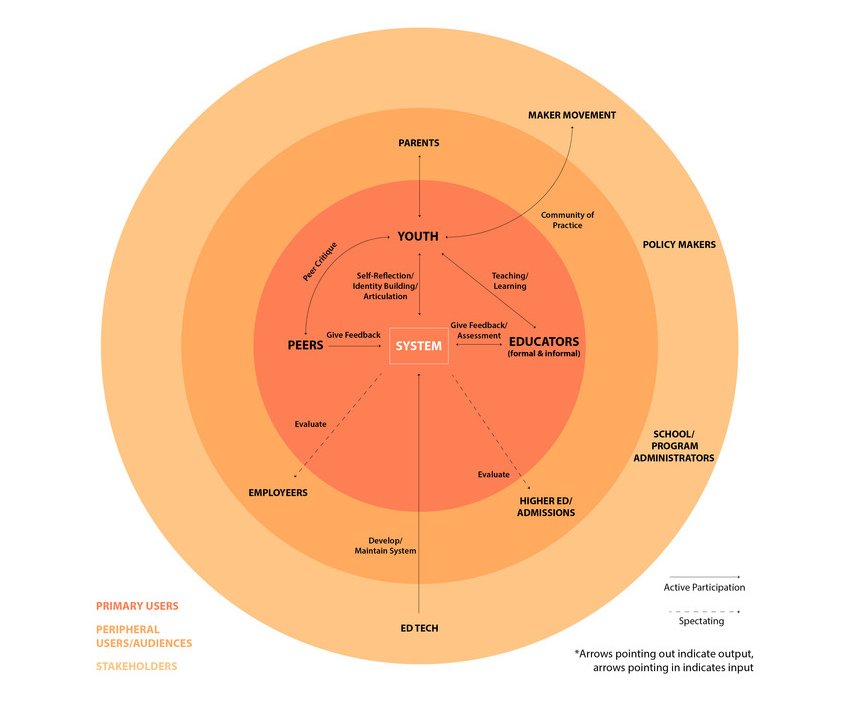

Sharespace
Re-imagining design work at high school
Overview
I spent a semester designing Sharespace, an educational platform that connects students with experts and peers in communities of practice. The design process involved a deep user research phase, lasting three and a half months. The goal of this design was to create a tool that supports learners in documenting in-progress work and curating final portfolio pieces.
My Role: User Research, Document Design
Team Members: Nouf Aljowaysir, Yiran Buckley, Ian Go
Context: Learning Media Design, Fall 2015
Client: Collective Shift
Problem Space
"Digital portfolios are becoming an increasingly important educational approach in 21st Century Learning initiatives. Digital portfolio creation is both a learning process and product that documents student interests, skills, and achievements and enables youth to curate creative outputs and personal accomplishments over time and across learning settings. Digital portfolios can also be used by teachers to monitor and assess progress, and by academic institutions and potential employers in the application review process."
We worked with Collective Shift to design an educational experience that utilized a portfolio system that was portable, modular, and could be shared. With the stakeholder goal of supporting portfolio practices, we proceeded to conduct primary, secondary, and user research to create Sharespace.
Secondary Research
Literature Review

We conducted a literature review on emerging trends in education. Based on this, we identified Maker and project based classes as an ideal space to launch a portfolio system. Furthermore, we identified learning science principles such as reflection and critique as processes that we wanted to support in the system.
Competitive Analysis
Following the literature review, we conducted a competitive analysis on three systems: CritViz, Scratch, and Build-in-Progress. In looking at these products, we realized that most platforms didn’t handle documentation or portfolio progress. Currently existing tools to not support learners in the creation of portfolios, only the social networking aspect of work. Furthermore, these products integrated poorly with a classroom flow, and were primarily meant to be used in informal and out-of-school contexts.
User Research
Over the course of a month, we conducted user studies with three different user groups: pre-professionals, educators, and high school students. We used a combination of contextual interviewing, directed storytelling, guerrilla interviews, and surveys to examine each group.
Contextual Interview
Directed Storytelling
Guerilla Interviews
Surveys
Research Insights
Based on the user research, we learned that students not only lacked feedback, but also lacked feedback from the sources that they valued the most: experts. Based on this we decided to pursue a social networking system. After speaking with pre-professionals, we realized that documentation and curation are distinct processes involved in the portfolio creation process. Because of this, we learned that different types of features would be necessary to both of these processes in our platform. Students need a space where they can document in-progress work for feedback and a space to curate their work for specific audiences.
Prototyping
Iterations
We went through three iterations until developing a final deliverable prototype. We started off by constructing wireframes, creating a pen & paper prototype, and then constructing two versions of an InVision prototype.
Testing
After each iteration, conducted task analysis exercises with CMU undergraduates to test the efficacy of our design. Based on these results, we realized that more specific language was necessary and a thorough onboarding would be crucial.
Lo-Fi

Mid-Fi
Hi-Fi
I learned a lot about the prototyping process mainly because of the mistakes and failures that we faced. Because we had so little time to design, we rushed through the process of going from low to high fidelity. While the prototyping process is meant to to fast paced, we didn’t spend an appropriate amount of time generating ideas through the low-fidelity stage. In doing so, we lot a lot of key insights that would have been useful to understand the actual system. Our insights from our usability testing focused more on misunderstanding about the function of UI elements and the meaning of certain labelling.
Next Project
Privacy Proxy